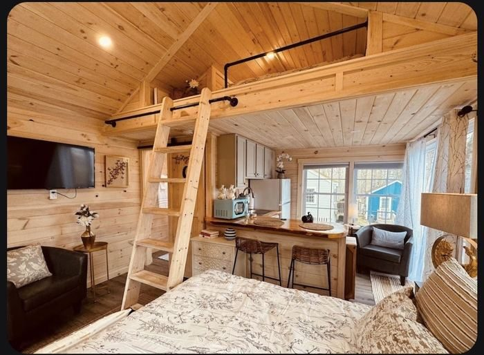

1

The easing-in day. Trade Alabama humidity for salt air by noon, point the Jeep up Route 1, and let Maine introduce itself the right way: a legendary lobster roll in a village of sea captains' houses, an afternoon wandering a postcard harbor, and a night in a tiny house tucked in the pines.
BHM
6:23 AM
DL3006
DTW
9:25 AM
DTW
10:05 AM
DL0426
PWM
12:02 PM
12:15p
Counter is across the roadway in the parking garage.
≈35 mi · ~35 min to Bath
1:00p
141 North Street, Bath, ME 04530. ~30 min from the Jetport. Hang out for a bit before continuing on — everyone's fresh off the plane, no rush yet.
≈13 mi · ~20 min to Wiscasset
2:45p
Red's Eats, Wiscassetcash only
THE lobster roll. Line can run an hour — Sprague's across the street is the no-wait backup. Later-afternoon arrival might mean a shorter line too.
≈14 mi · ~25 min to Boothbay
4:15p
Harbor walk, footbridge, waterfront ice cream, galleries.
—
Coastal Maine Botanical Gardensprobably cut
Closes 5 PM — with the Bath stop added, this one's unlikely to happen today. Worth doing another year.
≈10 mi · ~20 min to the cottage
Tonight 🏡
Cheerful Cottage with Loft 9 (Airbnb)
Hosted by Jeff · Check-in after 4:00 PM, checkout by 10:00 AM Wed

▸ the actual cottage
5 Boothbay Road, Cottage 9 · Edgecomb, ME 04556
Navigate ↗